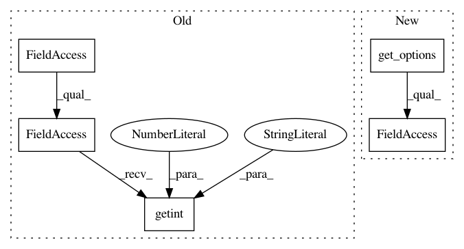

1da125c90f165228928a7ce0127ee78df8e1c1e1,src/python/pants/backend/core/tasks/task.py,TaskBase,_create_artifact_cache,#TaskBase#Any#Any#,198
Before Change
def _create_artifact_cache(self, spec, action):
if len(spec) > 0:
pants_workdir = self.context.options.for_global_scope().pants_workdir
compression = self.context.config.getint("cache", "compression", default=5)
my_name = self.__class__.__name__
return create_artifact_cache(
log=self.context.log,
artifact_root=pants_workdir,
After Change
def _create_artifact_cache(self, spec, action):
if len(spec) > 0:
pants_workdir = self.context.options.for_global_scope().pants_workdir
compression = self.get_options().cache_compression
my_name = self.__class__.__name__
return create_artifact_cache(
log=self.context.log,
artifact_root=pants_workdir,
In pattern: SUPERPATTERN
Frequency: 3
Non-data size: 5
Instances
Project Name: pantsbuild/pants
Commit Name: 1da125c90f165228928a7ce0127ee78df8e1c1e1
Time: 2015-02-25
Author: benjyw@gmail.com
File Name: src/python/pants/backend/core/tasks/task.py
Class Name: TaskBase
Method Name: _create_artifact_cache
Project Name: pantsbuild/pants
Commit Name: ab684469a7527b71a608c2dfbba0c35d85e4ff9a
Time: 2015-01-05
Author: benjyw@gmail.com
File Name: src/python/pants/backend/jvm/tasks/jvm_compile/jvm_compile.py
Class Name: JvmCompile
Method Name: __init__
Project Name: pantsbuild/pants
Commit Name: bb526ba78167ef0e65532a481e23469455f35c54
Time: 2014-10-10
Author: benjyw@gmail.com
File Name: src/python/pants/backend/jvm/tasks/jvm_compile/jvm_compile.py
Class Name: JvmCompile
Method Name: __init__